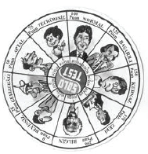

Atari: Bir zamanlar kocaman kartuş ve kasetleri olan, o kaset ve kartuşlarda oyunların yüklü olduğu bir alet vardı. Öyle bir yer etmişti ki çocuk dimağlarımızda belki de bir daha bu derece istenecek bir oyuncak olamaz.
Hâlâ yaşlı kimseler, bilgisayar başında birini görseler: “Atari mi oynuyorsun” derler. Aslında basit çizgilerle canlandırılan oyunları şimdiye kıyasladığımızda, oyun dünyasında tekerleğin icadı gibi bir durumu vardır, atarilerin.
Atari salonları açılmıştı, evlerine bu aletten alamayanlar için. Belki de kahvelerden bile çok sayıda türemiştiler. Okuldan kaçan çocuklar bu salonlarda saatlerini harcarlardı.
Game Watch: Bir dönemin en önde giden oyuncağı, çok pahalıydılar ve herkeste yoktu. Daha sonraları çoğunluğun eline geçti. Büyük küçük herkes oynardı.
Çıkardığı sesler hâlâ kulaklarımda çınlar. Çeşitli şekil ve ebatlıydılar. Bunların bir de içinde su olanları vardı. Halkaları sağ sol tuşlarına basarak oradaki direk gibi şeylere geçirmeye çalışırdınız.
Saatlerce oynadığımız olurdu. Sonradan özellikle Casio’nun ürettiği saatlerde de bu oyunlar yer almaya başlamıştı. Bu su geçirmeyen ve oyunlu, ışıklı saatler, sünnet çocuklarının ve okulu iyi bir karne ile bitirenlerin en sevdiği hediye idi. Hele ki, hesap makineli saatler ve yanlarında düğmeler olanlar acayip havalıydı. Ben ve kardeşimin sünnet hediyelerimizden biri Casio marka saatti, hatırlıyorum da o zamanlar kaç tane resim çektirdiysek hepsinde, allem kalem edip bu saati o kareye sokmuştuk. Görmemişlik mi desem, çocukluk mu desem, ne desem, bilmem?
Lego: Resmen ürettiğiniz daha doğrusu üretebildiğiniz şeylerle zekânız ölçülürdü. Çok beğenerek oynadığımız oyuncaklardan biridir. Hayal gücü ve beceriyi aynı anda geliştiren, insanı yaratıcılığa sevk eden güzel şeylerdi. Hâlâ oynanır ve zekâ gelişimine katkısı olduğunu duymuşluğum vardır. Yeni çıkan modeller daha şatafatlı, yedek malzemeleri de daha fazladır.
Mini Mekanik: Lego benzeri bu oyuncaklar, plastikten yapılma düz kafalı, kolu bacağı oynar-çıkarılır yapıdaydı. Elleri U şeklinde durur buralara bazı şeyler koyabilirdiniz. Pek öyle muteber bir ürün değildi. Egemenliği kısa sürmüştür. Çok sayıda çeşitleri vardı. Kızılderililer, doktorlar, inşaat işçileri vb.
Solo Test: Çocukluğumuzun en popüler oyunlarından olan bu oyuncak, şimdi sayısını hatırlayamadığım piyonları bulunduğu deliklerden atlatıp, kutu üzerinde en az sayıda kalacak şekilde bırakmak üzerine kuruluydu.
Bilgin, zeki, normal, geri zekâlı, deli gibi tanımlamaları vardı. Bu tanımlamalar, kutu üzerinde bıraktığınız piyon sayısının çokluğuna göre eksi yönde değişirdi.
Her sayının karşılığı olan bu degerlendirmelerin bir de resim karşılığı vardı. Bu resimler çok komik görünür, kendi aramızda hangimiz daha çok taş bırakmışsak gülüşmelerin konusu olurduk. Hunili tip, hâlâ gözümün önündedir.

Topaç: Tahtadan yapılanı makbuldür. Bu tahtadan yapılma üçgen şekilli yuvarlakımsı malzeme ipe dolanır, bir gazoz kapağı eşliğinde çivilenir, bu gazoz kapağı malzemenin kolay tutulmasını sağlardı. Bu oyuncağın tasarımı uzun süre dönsün diye hazırlanmıştı. Yere hızlı bir şekilde bırakılarak, dönmesi sağlanırdı.
İki türlü yere atış şekli vardı. Biri kız atışı denilen, ki yere kibar bir şekilde bırakılır, kısa süreli dönüşü olurdu. Bu kibarlıktan dolayı kız atışı adını almıştır. Diğeri ise, erkek atışı denilen şekliydi. Bu atışta topaç, neredeyse başı geçecek yükseklikten yere tokat atılırmış gibi sert bir şekilde bırakılır ve daha uzun süre dönmesi sağlanırdı.
Müsabakalarda hangi topacın daha fazla döneceğine dair iddialara girilir, uzun süreli dönüşler, topaç sahibine haklı bir gurur yaşatırdı. Hele ki diğer topaca çarpıp yön değiştirmesine ya da yıkılmasına sebep olursa, kasılmalar olur, zevkten dört köşe olan bu oyuncunun gözlerinin içi güler, kendine olan güveni artardı. Bu tipler ileride çok başarılara imza atmışlardır, desem de inanmayın.
Topaçların bir de plastik ve daha küçük ebatta olanları da vardı. Bunlar mıknatıslı da olabilir, bir tepsi gibi şeyin içinde çevrilirlerdi.
Fakat, benim daha önce de bahsettiğim köy hayatım zamanında daha ilginç yapımı olan topaçlar vardır ki, bunu İstanbul’un o yıllarında da buralarda görmek mümkün değildi.
Bu topaçın özelliği şudur: elinizde kendi hazırladığınız bir kırbaçla yerde dönmeye başlayan topaca vurursunuz. Vurmanın bir tekniği vardır. Ayaklarını yerden kesip bile döndürebilirdiniz.
Kırbaç hazırlanırken iyi bir ağacın size uygun bir dalı gerekir. Bu dalı gerekirse soyar, budaklarını temizlerdiniz. Bu dalın ucuna bıçakla bir bölüm kazırdınız. Kazıdığınız yere ıskartaya çıkmış traktör lastiğinden kesilme, bir bir buçuk metre uzunluğunda, iki üç milimetre genişliğinde lastik bağlardınız. Bu lastiği elinizdeki topaca düzenli sarar, sonra da usulüyle yere bırakırdınız. Zaten bırakırken dönmeye başlayan topaca da yukarıda dediğim gibi başlardınız vurmaya. O döndükçe yerden toz kalkar, zıplattıkça sevincinizden çılgına dönerdiniz.
Oyuncak Bebek: Kız çocuklarına annelik provası yaptırılan bir oyuncak türüdür. Eğitim aracı olarak da kullanılır. Ağlayınca mama verir ya da gazını çıkartırdınız.
Bana korkutucu gelirdi esasında, o kocaman gözleri eğilince kapanır, ayağa dikince açılırdı. Ağlayanları, konuşanları falan çıkmıştı. Almanya’dan dayılar, halalar getirirdi. Çeşitli modelleri vardı elbette, ama galiba akılda en çok kalan ağlayan modellerdir.
Hula Hop: Bir çember boru ve onu çılgınca çeviren ya da çevirmeye çalışan insanlar. Çeşitli renklerde yapılan bu çember, o zamanların en gözde eğlencelerinden biriydi. Sanırım herkes en azından bir kere çevirmeyi denemiştir. Sokaklar bu malzemeyi çeviren kız çocuklarıyla doluydu. Hatta abartanlar, aynı anda üç-beş taneyi bile çevirenler vardı. Hastalık gibi bir şeydi bu Hula Hop.
Frizbi: Seksenli yılların en sükseli oyuncaklarındandı. Satın alabilecek yer bile bulamazdınız. Daha sonra Schweppes markasının bir hediyesi olarak bazı kapakların altından çıkan sürprizlerle dağıtılmaya başlanmıştı.
Mahallenizde bu hediyeye sahip olan insanlar parmakla gösterilir, hem şansından dolayı gıpta ile bakılır, hem de frizbisi var diye kıskanılırlardı.
Halen plajlarda, pikniklerde oynanılır. Bilen insanlarla oynamak çok zevkli, bilmeyenle oynamaksa bir o kadar zevksiz ve sonu yorgunlukla biten bir durumdur. Bu basit plastik aletin yerine başka şeyler ikame edilmeye çaba sarf edilmiş ya plastik bir tabak, ya tencere kapağı bu vazifeyi ifaya çalışılmıştır uzunca bir süre.
Misket: Oyunların en güzellerinden biridir. Zamanının gelmesini dört gözle beklediğimiz, bir sürü oyun çeşidi olan, estetik, göz alıcı renkleri ile sokakların vazgeçilmezidir. Bu oyunu oynamak için de yine toprak bir zemine ihtiyaç vardır. Çocukluk yıllarımda sanki hiç unutulmayacak, sürekli oynanacak bir oyunmuş gibi gelirdi bana. Ancak yıllardır ne bir oynayan gördüm, ne oynadım ne de misket gördüm.
Unutturulmaması gereken oyunlardandı Misket. Ancak yeri doldurulmamakla birlikte, esamesi de okunmamaktadır. Sadece hahzalarımızda kalan haliyle ara sıra aklımıza gelir. Oysa o zamanlar misket oyununa dalar, eve gitmeyi bile unuttuğumuz olurdu.
Misketlerle oynanan en yaygın oyun, misketlerin sıra ile yan yana dizilip bir mesafeden yine sıra ile “kaflik” adı verilen, diğerlerine göre daha büyük ve gösterişli olan misket ile bu yerde sıralı olanların vurulmasıdır. Baş ya da başaltı denilen yerden itibaren ya da nereden vurabildiysen oranın solundakilerin senin olmasıdır. Bunun haricinde “mors”, “üsküp”, “otuz altı”, “çukur” ve nice çeşitleri vardır. “Çukur” ya da “kuyu” oyunları pek muteber, ustalık ve hüner gerektiren çeşitleridir. Toprak zeminde, topuk üstünde dönülerek hazırlanan uygun çukurlara misketler önce atılır, sonra da oradan çıkarılmaya çalışılırdı. Bu atışların her birinin adı vardı. Karış, mumdirek gibi isimleri hatırlıyorum ama diğerleri hafızamdan silinip gitmiş.
Pervane: Ortası delik şekilde, bükümlü bir tele geçirilerek önce aşağıya, sonra da en hızlı şekilde yukarıya çekilerek fırlatılan bir oyuncak. Esas olan en yükseğe fırlatmaya çalışmaktır. Bu kadar basit ve bu derece zevkli olan oyuncak çeşidi azdır.
Üfürme Sepetli Top: Plastik ufak bir borunun ucunda yine ufacık bir sepet ve çok hafif bir top olur, siz bu topu üfleyerek uzun süre havada tutmaya çalışırdınız. Bakkalda satılan oyuncaklardandı. Rekor kırmaya çalışırken çok sayıda nefesi kesilenler olmuştur. Şimdi nerede o oyuncaklar bilmem.